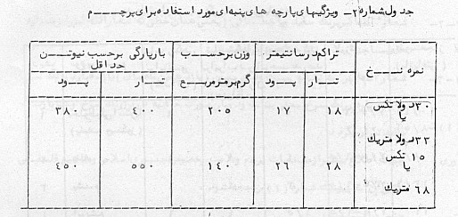
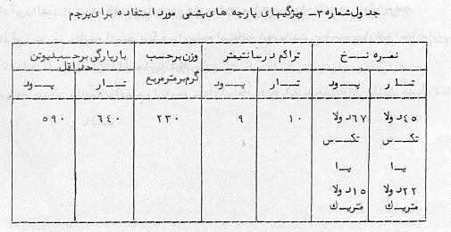
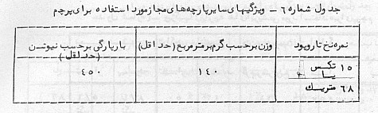
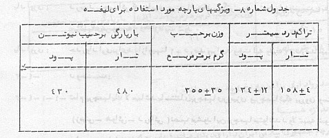
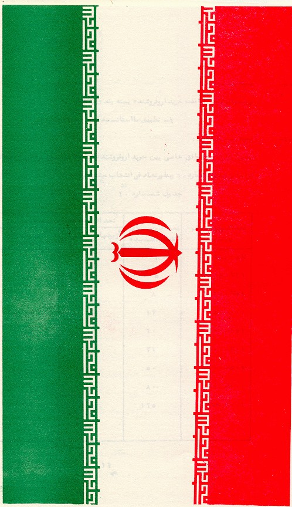
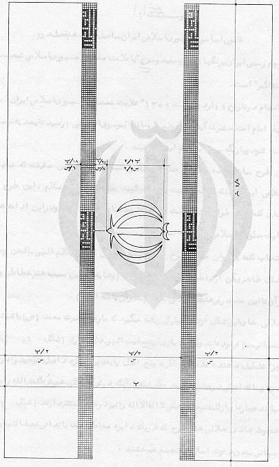
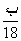
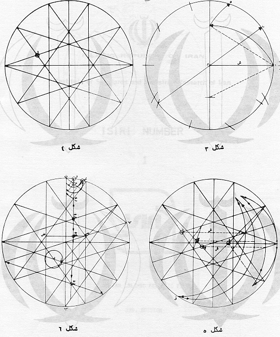

|
|
|
|
|
|
|
|
|
|
|
|
|
1 |
|
|
|
|
|
|
|
پرچم جمهوري اسلامي ايران |
|
|
|
|
|
چاپ سوم |
|
|
|
اسفند ماه 1371 |


موسسه استاندارد و تحقيقات صنعتي ايران
موسسه
استاندارد و تحقيقات صنعتي ايران تنها سازماني است در ايران كه بر طبق قانون ميتواند
استاندارد رسمي فرآوردهها را تعيين و تدوين و اجراي آنها را با كسب موافقت
شورايعالي استاندارد اجباري اعلام نمايد. وظايف و هدفهاي موسسه عبارتست از:
( تعيين،
تدوين و نشر استانداردهاي ملي – انجام تحقيقات بمنظور تدوين استاندارد بالا بردن
كيفيت كالاهاي داخلي، كمك به بهبود روشهاي توليد و افزايش كارائي صنايع در جهت
خودكفائي كشور- ترويج استانداردهاي ملي – نظارت بر اجراي استانداردهاي اجباري –
كنترل كيفي كالاهاي صادراتي مشمول استاندارد اجباري و جلوگيري از صدور كالاهاي
نامرغوب به منظور فراهم نمودن امكانات رقابت با كالاهاي مشابه خارجي و حفظ بازارهاي
بين المللي كنترل كيفي كالاهاي وارداتي مشمول استاندارد اجباري به منظور حمايت از
مصرف كنندگان و توليدكنندگان داخلي و جلوگيري از ورود كالاهاي نامرغوب خارجي
راهنمائي علمي و فني توليدكنندگان، توزيع كنندگان و مصرف كنندگان – مطالعه و تحقيق
درباره روشهاي توليد، نگهداري، بسته بندي و ترابري كالاهاي مختلف – ترويج سيستم
متريك و كاليبراسيون وسايل سنجش – آزمايش و تطبيق نمونه كالاها با استانداردهاي
مربوط، اعلام مشخصات و اظهارنظر مقايسهاي و صدور گواهينامههاي لازم ) .
موسسه
استاندارد از اعضاء سازمان بين المللي استاندارد مي باشد و لذا در اجراي وظايف خود
هم از آخرين پيشرفتهاي علمي و فني و صنعتي جهان استفاده مي نمايد و هم شرايط كلي و
نيازمنديهاي خاص كشور را مورد توجه قرار مي دهد.
اجراي
استانداردهاي ملي ايران به نفع تمام مردم و اقتصاد كشور است و باعث افزايش صادرات
و فروش داخلي و تأمين ايمني و بهداشت مصرف كنندگان و صرفه جوئي در وقت و هزينه ها
و در نتيجه موجب افزايش درآمد ملي و رفاه عمومي و كاهش قيمتها مي شود.
|
كميسيون ويژگيهاي پرچم رسمي جمهوري اسلامي
ايران |
||
|
رئيس |
||
|
طراح پرچم جمهوري
اسلامي ايران |
|
نديمي - حميد |
|
استاد دانشگاه پلي
تكنيك تهران |
دكتراي نساجي |
حقيقت كيش - محمد |
|
اعضاء |
||
|
چيت سازي تهران |
|
آزادگان - جهانگير |
|
صدا و سيماي جمهوري
اسلامي ايران |
|
ابوذري - محمد |
|
وزارت كشور |
|
بهرامي - مجيد |
|
كارشناس مؤسسه
استاندارد و تحقيقات صنعتي ايران |
|
تقوي - فيروز |
|
وزارت صنايع و
معادن |
|
جعفرزاده قاضي –
حسن |
|
كارخانه فخر ايران |
|
سپاه منصور –
محمدعلي |
|
فرماندهي لجستيكي -
مديريت يكنواخت سازي ارتش جمهوري اسلامي ايران |
|
سبحاني - سرگرد
پرويز |
|
ستاد مشترك ارتش
جمهوري اسلامي ايران |
|
كيهاني - سرهنگ
كامبيز |
|
لجستيكي ژاندارمري
جمهوري اسلامي ايران |
|
حاج آخوندي – سروان
يعقوب |
|
كارشناس مسئول
مؤسسه استاندارد و تحقيقات صنعتي ايران |
|
صوراسرافيل – شيرين |
|
كارشناس مسئول
مؤسسه استاندارد و تحقيقات صنعتي ايران |
|
كرباسيان - رضا |
|
مؤسسه ايران اسكرين
(توليد پرچم) |
|
نجفي - محمدمهدي |
|
مدير برنامه ريزي
نساجي مازندران |
|
هاني - مسعود |
|
شركت ايران هوخست |
|
هندي - مسعود |
|
روابط عمومي وزارت
ارشاد |
|
وكيل - عباس |
|
دبير |
||
|
كارشناس مؤسسه
استاندارد و تحقيقات صنعتي ايران |
|
طالبي رجبي - فخري |
فهرست
مطالب
استاندارد ويژگيهاي پرچم جمهوري اسلامي ايران تجديد نظر
بسمه تعالي
پيشگفتار
استاندارد ويژگيهاي پرچم جمهوري اسلامي ايران كه طرح كلي
آن به تأئيد امام امت و تصويب مراكز قانوني رسيده است به استناد ماده يك قانون
مواد الحاقي تأسيس مؤسسه استاندارد و تحقيقات صنعتي ايران مصوب آذر ماه سال 1349به عنوان استاندارد رسمي ايران منتشر مي گردد اين
استاندارد با همكاري صاحب نظران و كارشناسان مؤسسه در كميسيون فني پرچم رسمي
جمهوري اسلامي ايران تهيه و در بيست و سومين جلسه كميته ملي صنايع نساجي مورخ 59/6/31به تصويب رسيد بديهي
است در صورت لزوم پيشنهاداتي كه براي اصلاح يا تكميل اين استاندارد به مؤسسه برسد
مورد توجه قرار خواهد گرفت و در تجديد نظر بعدي مراعات خواهد شد، پس از تجديد نظر
در هر استاندارد جزوه سابق لغو و بجاي آن جزوه تجديد نظر شده رسميت مي يابد.
استاندارد
ويژگيهاي پرچم جمهوري اسلامي ايران
" تجديد نظر"
سرانجام نهال خون شهيدان "الله اكبر" به گل نشست
و ايران لاله زار شد، تا به سپاس تو اي شهيد، لاله خونت لااله الااله شود و بر
پرچم امت بپاخاسته امام زمان و نايبش امام خميني بنشيند، يعني كه پاسداري ثمره خون
تو اي شهيد پاسداري لااله الااله و محمد رسول اله است.
- 1هدف
اين استاندارد دربردارنده ويژگيهاي پرچم جمهوري اسلامي ايران
(جنس، علامت مخصوص رنگ، اندازه، دوخت) مي باشد.
- 2واژه ها و اصطلاحات
- 1 - 2پارتي:
پارتي به كالائي گفته مي شود كه همجنس و هم نوع و داراي يك
نمره نخ بوده و در يك مرحله توليد شده باشد.
- 2 - 2مردود (معيوب):
هر گاه ويژگيهاي نمونه و يا دسته اي از نمونه هاي مورد
آزمون از يك كالا با ويژگي هاي اين استاندارد مطابقت نداشته باشد آن كالا مردود
شناخته مي شود.
- 3ويژگيهاي پرچم
- 1 - 3طرح:
پرچم جمهوري اسلامي ايران بر طبق اصل هيجدهم قانون اساسي
به رنگهاي سبز و سفيد و سرخ با علامت مخصوص جمهوري اسلامي ايران و شعار "الله
اكبر" به مشخصات زير مي باشد:
- 1 - 1 - 3علامت مخصوص جمهوري
اسلامي ايران به رنگ سرخ در وسط پرچم قرار مي گيرد.
- 2 - 1 - 3شعار "الله اكبر
به رنگ سفيد و يا خط بنائي (يعني همان خطي كه شعار الله اكبر را بر مناره هاي
مساجد اسلامي نقش مي كند) تكرار مي شود.
- 3 - 1 - 3شعار "الله
اكبر" به نشانه بيست و دوم بهمن (يازدهمين ماه سال) يازده بار در رنگ سبز و
يازده بار در رنگ سرخ يعني بيست و دو بار به صورت حاشيه در مرز رنگ سرخ و سبز با
رنگ سفيد تكرار مي گردد.
يادآوري: جهت اطلاع بيشتر از مشخصات پرچم و علامت مخصوص
جمهوري اسلامي و مفاهيم فلسفه مكتبي آن به پيوست شماره (1) مراجعه
شود.
- 2 - 3جنس و بافت:
پارچه پرچم بايد از نخ پنبه اي خالص سفيد و مرسريزه شده و
يا مخلوط پنبه - پلي استر و ويسكوز- پلي استر (معمولا به نسبت 65-35 درصد )
تهيه شود در ضمن از ابريشم و پشم نيز مي توان استفاده نمود، ولي پارچه پرچم نبايد
از ويسكوز خالص باشد.
بافت پارچه مورد استفاده براي پرچم ساده و از نوع تاري و
پودي است.
- 1 - 2 - 3ويژگيهاي فني:
پارچه پرچم از هر جنس كه باشد بايستي ويژگيهاي عمومي جدول
شماره 1و 6را داشته باشد.

يادآوري الف: در مورد رطوبت مجاز پارچه هاي مخلوط مي بايد
نسبت اختلاط در نظر گرفته شود.
يادآوري
ب: چنانچه از جنس ديگري براي پرچم استفاده شود بايستي رطوبت مجاز طبق استانداردهاي
ملي ايران محاسبه شود.
- 1 - 1 - 2 - 3چنانچه براي پرچم از
پارچه پنبه اي استفاده شود بايد مشخصات آن مطابق جدول شماره 2باشد.

حد رواداري براي نمره نخ و تراكم و وزن 4±
درصد مي باشد.
- 2 - 1 - 2 - 3چنانچه براي پرچم از
پارچه پشمي استفاده شود بايد مشخصات آن مطابق جدول شماره 3 باشد.

حد رواداري براي نمره نخ و تراكم و وزن 4±
درصد مي باشد.
- 3 - 1 - 2 - 3چنانكه براي پرچم از
پارچه ابريشمي استفاده شود بايد مشخصات آن مطابق جدول شماره 4باشد.

حد رواداري براي نمره نخ و تراكم و وزن 4±
درصد مي باشد.
- 4 - 1 - 2 - 3ويژگيهاي پارچه هاي
پلي استر، ويسكوز بايستي با جدول
شماره 5مطابقت داشته باشد.

حد رواداري براي نمره نخ و تراكم 4± درصد مي
باشد.
- 5 - 1 - 2 - 3ويژگيهاي ساير پارچه
هاي مجاز مخلوط بايستي با تحقيقات جدول شماره 6مطابقت داشته باشد.

يادآوري : حد رواداري براي نمره نخ 4± درصد مي
باشد.
- 3 - 3اندازه ها:
پرچم جمهوري اسلامي ايران داراي دوازده اندازه است كه به
نسبت 4به 7بوده و بر اساس جدول
شماره 7تعيين مي شود كليه اندازه ها بر حسب ميليمتر داده شده است:

يادآوري: در مورد پرچمهائي كه بنابر ضرورت با ابعاد بزرگتر
تهيه مي شود بايد نسبت 4به 7و ساير ويژگيهاي
مربوط به دوخت رعايت شود.
يادآوري: حد رواداري براي درازا و پهنا 2±
درصد و براي دوخت لبه و ليفه 4± درصد مي باشد.
- 4 - 3دوخت:
- 1 - 1 - 4 - 3تمام پرچمها يك لا مي
باشد به استثناي پرچمهاي روميزي و پرچمهائي كه بر روي وسائط نقليه (زميني - هوائي
- دريائي) نصب مي شود اين پرچمها مي توانند دولا تهيه شوند.
- 2 - 1 - 4 - 3تمام پرچمها بايد يك
تكه باشد به استثناي پرچمهائي كه پهناي آنها بالاتر از 140سانتيمتر مي باشد در
اين صورت درز بايد در متن سفيد واقع شده و روي نوشته و علامت قرار نگيرد و حداقل
فاصله درز از نوشته و علامت 3 سانتيمتر است و تعداد بخيه در
10سانتيمتر 3±
45مي باشد.
- 3 - 1 - 4 - 3لبه بيروني دو طرف
كليه پرچمها بايد دو درزه دوخته شود.
- 4 - 1 - 4 - 3مقاومت نخ مورد استفاده براي دوخت پرچم بايد حداقل مطابق مقاومت مندرج در استاندارد
شماره 59باشد، رنگ آن به طور معمول نارنجي بوده و يا مي تواند براي
هر قسمت از نخ هم رنگ استفاده شود.
- 2 - 4 - 3ساخت :
- 1 - 2 - 4 - 3ليفه پرچم داراي
اندازه هائي مطابق با جدول شماره 7مي باشد ليفه پرچمهائي كه پهناي
آنها بالاتر از 100سانتيمتر است بايد از برزنت و يا
پارچه مشابه يا بافت ساده طبق مشخصات جدول شماره 8 استفاده شود.

- 2 - 2 - 4 - 3ميله - قطر ميله
پرچم 2تا 4سانتيمتر و درازاي
آن 3برابر عرض پرچم مي باشد در انتهاي ميله بلافاصله بعد از
پرچم گوئي قرار دارد كه نسبت قطر آن به قطر ميله پرچم برابر سه به دو مي باشد.
يادآوري:
در مياديني كه از لوله هاي ثابت فلزي استفاده مي شود ارتفاع
ميله بر حسب وسعت ميدان متغير بوده و رنگ آن بايد حتي الامكان اكليل نقره اي باشد.
- 3 - 2 - 4 - 3طناب مورد استفاده
براي پرچم بايستي نايلون به قطر حداقل يك سانتيمتر باشد.
- 5 - 3عيوب :
مهمترين عيوب چشمي پرچم به شرح زير مي باشد، ولي حد
رواداري آن طبق جدول شماره 10مي باشد.
- 1 - 5 - 3سوراخ و دررفتگي نخ تار و پود
- 2 - 5 - 3رگه رگه بودن
- 3 - 5 - 3قيچي خوردگي
- 4 - 5 - 3آثار لكه روغن و زردي و بريدگي و سوختگي و يا ضايعات ديگر
- 5 - 5 -3 جمع شدگي و يا كشيدگي محل
دوخت و يا جاافتادگي بخيه ها
- 6 - 5 - 3 دورنگ بودن
براي هر رنگ
- 7 - 5 - 3عدم تطبيق با ابعاد
داده شده
- 8 - 5 - 3پخش شدن رنگ در محل
علامت
- 9 - 5 - 3چاپ علامت روي درزها
و يا انحراف آن از وسط
- 6 - 3علامت:
علامت مخصوص جمهوري اسلامي ايران تجسمي از كلمه توحيد
(لااله الااله) در قالب كلمه الله است كه به رنگ سرخ بوده و در قسمتي ميان رنگ
سفيد پرچم چاپ مي شود و شعار الله اكبر به تعداد
22مي باشد كه 11با در حاشيه وسطي رنگ سبز و 11بار حاشيه وسطي رنگ
سرخ قرار مي گيرد.
رنگ كلمات "الله اكبر" سفيد بوده و هيچ مرزي با
رنگ سفيد پرچم ندارد و لابلاي نوشته ها در نواره بالا با رنگ سبز و در نواره پائين
با رنگ سرخ پرچم پر مي شود.
- نمونه پرچم جمهوري اسلامي ايران با مشخصات فني و رنگهاي
مورد قبول استاندارد ايران در متن استاندارد پيوست شده است.
يادآوري: جهت اطلاع بيشتر از ويژگيهاي هندسي و طرز ترسيم
علامت مخصوص و پرچم جمهوري اسلامي به پيوست
2مراجعه شود.
- 7 - 3نشانه گذاري روي
پرچم:
پرچمهاي تهيه شده بايد داراي مشخصات زير باشد كه به نحوي
روشن و خوانا در گوشه انتهائي ليفه نوشته مي شود:
الف - نمره پرچم (اندازه)
ب - درازا و پهناي پرچم به ميليمتر
پ - نام و نشان سازنده
ت - سال ساخت
ث - هر گونه اطلاعات اضافي كه مورد نياز خريدار باشد.

- 8 - 3بسته بندي:
پرچمها بر اساس موافقت خريدار و فروشنده بسته بندي مي
شوند.
- 9تطبيق با استاندارد
- 1 - 9نمونه برداري:
به غير از مواردي كه توافق خاصي بين خريدار و فروشنده شده
باشد نمونه برداري از كالا بر اساس جدول شماره 10و به طور تصادفي
انتخاب مي شود.

يادآوري:
آزمونهاي چشمي بايد در محل كارگاه توليد و يا انبار انجام گيرد.
- 2 - 9شرايط آزمون
آزمونها را قبل از آزمون حداقل 24ساعت در رطوبت نسبي 2±
65درصد و دماي 2±
20درجه سانتيگراد (مطابق استاندارد
شماره 48ايران) قرار داده، سپس آزمونهاي لازم را در همان محيط
انجام دهيد.
- 3 - 9روشهاي آزمون
- 1 - 3 - 9آزمون تعيين جنس طبق
استانداردهاي شماره 567، 573، 684و 1150ايران انجام مي گيرد.
- 2 - 3 - 9آزمون تعيين درازا و
پهناي پارچه طبق استاندارد شماره 724ايران انجام مي گيرد.
- 3 - 3 - 9آزمون تعيين ثبات رنگ
در مقابل نور طبق استاندارد شماره 205ايران انجام مي گيرد.
- 4 - 3 - 9آزمون تعيين ثبات رنگ
در شستشو طبق استاندارد شماره 189ايران انجام مي گيرد.
- 5 - 3 - 9آزمون تعيين ثبات رنگ
در آب باران طبق استاندارد شماره 1588ايران انجام مي گيرد.
- 6 - 3 - 9آزمون تعيين ثبات رنگ
در آب دريا طبق استاندارد شماره 248ايران انجام مي گيرد.
- 7 - 3 - 9آزمون تعيين PH طبق استاندارد شماره 1422انجام مي گيرد.
- 8 - 3 - 9آزمون تعيين رطوبت
طبق استاندارد شماره 30انجام مي گيرد.
- 9 - 3 - 9آزمون تعيين و تغيير
ابعاد طبق استاندارد شماره 1246انجام مي گيرد.
- 10 - 3 - 9آزمون تعيين مقاومت
پارچه و ليفه طبق استاندارد شماره 1147 انجام مي گيرد.
- 11 - 3 - 9آزمون تعيين مقاومت
طناب طبق استاندارد شماره 1715انجام مي گيرد.
- 12 - 3 - 9آزمون تعيين فام رنگ
مقايسه اي انجام مي شود.

- 1پ: پهناي كل پرچم
- 2س: پهناي هر كدام از
رنگهاي پرچم كه برابر  است.
است.
- 3جهت توجيه بيشتر اعداد داده شده به طور مثال  نشان دهنده  پهناي كل پرچم مي باشد.
پهناي كل پرچم مي باشد.

پيوست 1
قانون اساسي جمهوري اسلامي ايران - اصل هجدهم فصل دوم
"پرچم رسمي ايران به رنگهاي سبز و سفيد و سرخ"
يا علامت مخصوص جمهوري اسلامي شعار "الله اكبر" است.
سرانجام در تاريخ
19ارديبهشت 1359"علامت
مخصوص جمهوري اسلامي ايران" به تنفيذ امام امت حضرت آيت الله العظمي
"روح الله الموسوي الخميني: رسيد تا بعد به خون آغشته شود و با رنگ سرخ بر
پرچم ايران بنشيند.
اين طرح بيان كننده محتواي حكومت اسلامي است. با تكيه بر
اين حقيقت كه جمهوري اسلامي ايران حلقه واسطي است در راه حكومت جهاني و آرماني
اسلامي، اين طرح بر مبناي كلمه الله طراحي شده است كه مبداء و منتهاي آفرينش است و
در اين ادامه هدف و غايت حكومت اسلامي (الي اله المصير.....)
انتخاب كلمه به عنوان مبناي طرح از آنجاست كه ميان محتواي
كلام الهي با لحن و صوت شكل ظاهري آن ارتباطي پنهان وجود دارد (و شايد به همين سبب
هنر خطاطي و ترتيل قرآن تا اين حد در فرهنگ اسلامي نفوذ و گسترش يافته است).
هلالي هاي اين شكل از نقش مباركي ريشه مي گيرد كه بارها
حضرت محمد (ص) با شمشير بر شنها ترسيم فرموده اند و بي شك
باري از
هدايت الهي در بر دارد (شكل 1) پنج جزء تشكيل دهنده علامت
كه اگر به پنج اصل پايه دين برگردد اصل توحيد را در حكم عمود و ساقه اصلي در ميان
دارند، گذشته از آنكه در تركيب كلي خويش كلمه الله را
بيان. مي كنند عصاره اي از كلمه توحيد يعني لااله الااله را نيز در خود مستتر
دارند (شكل 2) خطوط هادي هلالي هاي طرح كه در يك دايره محاط است با تداعي نصف
النهارهاي كره جهاني بودن دعوت اسلام را تجسم مي بخشند.
جزء قائم مياني - در تركيب با شكل تشديد ( ّ ) كه در خط فارسي و
عربي نشانه شدت است شمشير را تداعي مي كند، قائم و ايستاده كه خود نماد و قدرت و
استحكام و ايستادگي است و اين برداشتي تعبيري از كلمه "حديد" يا آهن است
در كتاب اله (.... انزلنا الحديد "فيه باس" شديد ") و تركيب كاملا
متقارن شكل بياني از حالت تعادل و توازن كه اين نيز برداشتي تعبيري است از كلمه
ميزان در كتاب خدا ( والسماء رفعها
و وضع "الميزان"). و بجاست كه همراه تمامي شهداي راه حق يادي نيز از
معلم شهيد شريعتي كنيم كه مي گفت "جامعه اي ايده آل بسازيم، جامعه اي كه بر
اين سه پايه چنانكه در قرآن آمده است مستقر باشد، كتاب - ترازو - آهن (كتاب -
ميزان - حديد).
و بالاخره بزرگترين و اصلي ترين ويژگي لازم و كافي تركيب
طرح همانا بيان كلمه الله است كه خود هم قالب است و هم محتوي.
و... " شعار الله اكبر" كه تكرار مي شود و تكرار
از ويژگيهاي شعار است اين شعار يازده بار در رنگ سرخ و يازده بار در رنگ سبز يعني بيست و دو بار تكرار مي شود و اين اشاره ايست به بيست و دوم بهمن
(يازدهمين ماه سال). روزي كه اين شعار براي انقلاب اسلامي پيروزي آفريد.
قالب راست گوشه خط نوشته "الله اكبر" يادي است
از كوبندگي اين شعار كه براستي سلاحي بود پيروز در دست مجاهدان انقلاب اسلامي. و
اين همان خطي است (خط بنايي) كه شعار الله اكبر را بر بلنداي اذان و بر گنبدها و
مناره هاي الله اكبر در مساجد اسلامي نقش مي كرده و اكنون بر بلنداي پرچم ايران
نشسته است. تكرار اين شعار در تركيب كلي پرچم حاشيه هائيست كه با اتصال به رنگ
سفيد پرچم دو رنگ سرخ و سبز را به هم پيوند مي زند. كه اگر سفيد نشانه اي از توحيد
باشد - كه سفيد تركيب و توحيد همه رنگهاست - اين رنگ متن سرخ پرچم را كه نشانه خون
و جهاد است به رنگ سبز كه مي تواند نمادي از آرمانهاي والاي اسلام باشد مي پيوندد.
و گوئي لاله
"لااله الااله" در
زمين الله اكبر و هم زير آسمان الله اكبر روئيده است و.... اين پيام شهيدان اسلام
است.
پيوست 2
ويژگيهاي هندسي و طرز
ترسيم علامت مخصوص و پرچم جمهوري اسلامي
- 1دايره اي به مركز (م)
و شعاع (ش) رسمي مي كنيم،
- 2محيط دايره را ابتدا
به پنج قسمت مساوي و سپس به ده قسمت تقسيم مي كنيم (شكل 3) از نقطه
الف شروع مي كنيم و با خطوط و قوسهاي كمكي ابتدا نقطه 5و سپس نقطه 10را بدست مي آوريم).
- 3با نقاط بدست آمده
روي محيط دايره دو ستاره پنج پر متقاطع را رسم مي كنيم (شكل 4) نقطه (1)
مركز اولين قوس هلالي بدست مي آيد.
- 4خطوط كمكي لازم را
مطابق شكل (5) رسم مي كنيم تا مراكز قوسهاي ديگر نيز بدست آيد به ترتيب نقطه (1)
(2)
(3)
و (4) مراكز قوسهائي است كه از داخل به خارج هلالي ها را رسم مي كنند.
(شكل 5).
- 5قوسهاي (2)
و (3) كه طرف مقعر هلالي ها است با شعاعي برابر با (ش) كه شعاع دايره
محيطي آرم است رسم مي شوند. (شكل 5)
- قوس (1) دايره را در نقطه (ق) قطع مي كند كه قوس (2) را از
همين نقطه و به مركز (2) (شعاع ق
- 2) استخراج
مي كنيم تا قوس (1) را قطع كرده هلالي اول را كامل كند (شكل 5)
- 7هلالي دوم نيز از
تقاطع دو قوس (3) به مركز (3) و شعاع (ش) و قوس (4)
به مركز (4) و مماس با دايره محيطي كامل مي شود (شكل 5)
- 8نقطه (ح) را روي
تقاطع دو ستاره داريم، نقطه (ج) را نيز با ترسيم دو خط كمكي مطابق
شكل (6) بدست مي آوريم. خط قائمي كه از نقطه (ح) رسم شود پاره خط افقي ص
ض را در نقطه (چ) قطع مي كند. نقطه (چ) را به نقطه (ج) وصل كرده، تقاطعش با خط
كمكي ب - پ ادامه مي دهيم.
- 9قائم رسم شده از نقطه
(ح) دايره را در نقطه (و) و خط كمكي (پ - ت) را در (ه) قطع مي كند.
- 10قوس به مركز (و) و به
شعاع (د - ذ) مطابق شكل (6) رسم مي كنيم تا به نوبه خود
دايره محيطي را در نقطه (ي) قطع كند.
- 11به مركز (ه) و به
شعاع (ه - ي) قوس ديگري ترسيم مي كنيم دو قوس (ه) و (و) را تا محور قائم شكل كه
محور تقارن آرم نيز هست ادامه مي دهيم.
- 12به مركز (ي) و شعاع ي – خ قوسي رسم مي كنيم و تا محور تقارن شكل ادامه مي دهيم بدين ترتيب
نيمي از شكل جزء قائم مياني آرم بدست مي آيد.
- 13نيمي از آرم را تا به
حال ترسيم كرده اي شكل 7حال قرينه محوي آنرا نيز نسبت به
محور تقارن قائم شكل مي توان رسم نموده آرم را كامل كرد.
- 14خط كمكي ط - ظ را تا
تقاطعش با محور تقارن آرم ادامه مي دهيم. ت - ث يعني فاصله دايره محيطي آرم با لبه
رنگ سبز و سرخ پرچم بدست مي آيد شكل (8).
- 15ضلع پنج ضلعي داخلي
را كه از تقاطع دو ستاره بدست آمده (پاره خط ك - گ) با خطوط موازي كمكي بروي محور
تقارن منتقل مي كنيم (شكل 8)
- 16ث - ل عرض نواره الله
اكبرهاي پرچم است كه الله اكبرها با خط بنائي در آنها گنجانده خواهد شد. اين نواره
را در جهت عرض به 7قسمت مساوي تقسيم مي كنيم و بر
اساس واحد بدست آمده در جهت طول نيز نواره را تقسيم كرده شبكه اي راست گوشه از
مربعها بدست مي آوريم كه زمينه خط نوشته الله اكبر است (شكل 8)
- 17"الله اكبر"ها را در دو نواره بالا و پائين مطابق
شكل 8 به نحوي رسم مي كنيم
كه يازده "الله اكبر" در نواره بالا و يازده "الله اكبر" در
نواره پايين جا بگيرد كه در مجموعه 22 "الله
اكبر" خواهيم داشت.
حرف الف "الله اكبر" در نواره بالا در زير كلمه و در نواره پائين در بالاي كلمه به طور افقي و در مرز رنگ سفيد با سرخ و سبز
قرار مي گيرد.
- 18رنگ "الله
اكبر"ها سفيد است و هيچ مرزي با رنگ سفيد پرچم ندارد و لابلاي خط نوشته ها در
نواره بالا با رنگ سبز پرچم و در پائين با رنگ سرخ پرچم پر مي شود.




|
ISLAMC REPUBLIC OF IRAN |
|
|
|
Institute of Standards and Industrial Research of Iran |
|
|
|
ISIRI NUMBER |
|
|
|
1 |
|
|
|
|
|
|
|
IRANIAN ISLAMIC REPUBLIC FLAG |
|
|
|
|
|
Third Edition |
|
|
|
March 1993 |